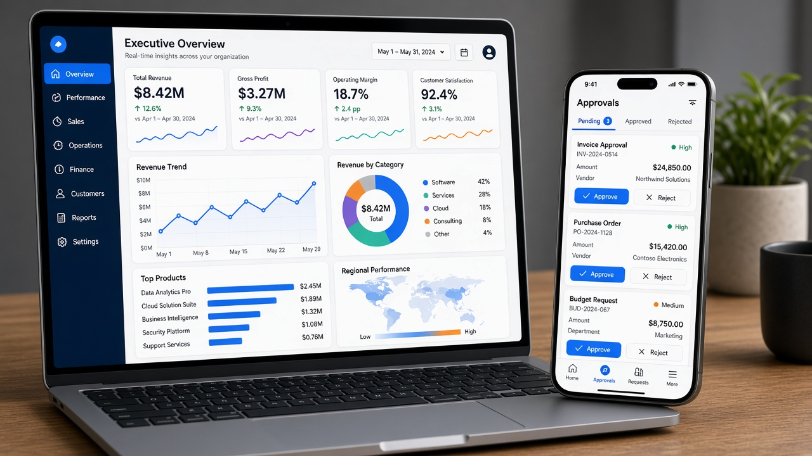
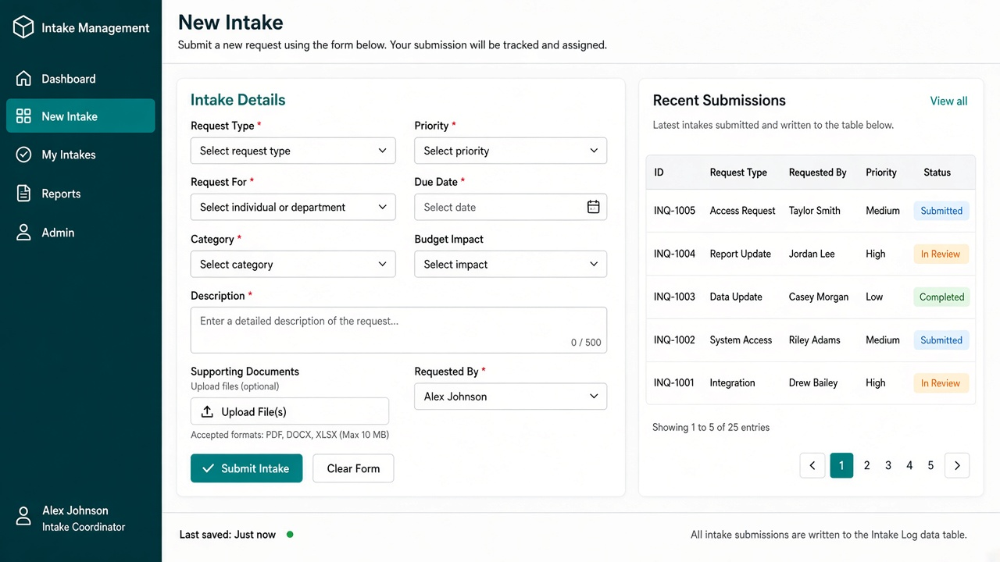
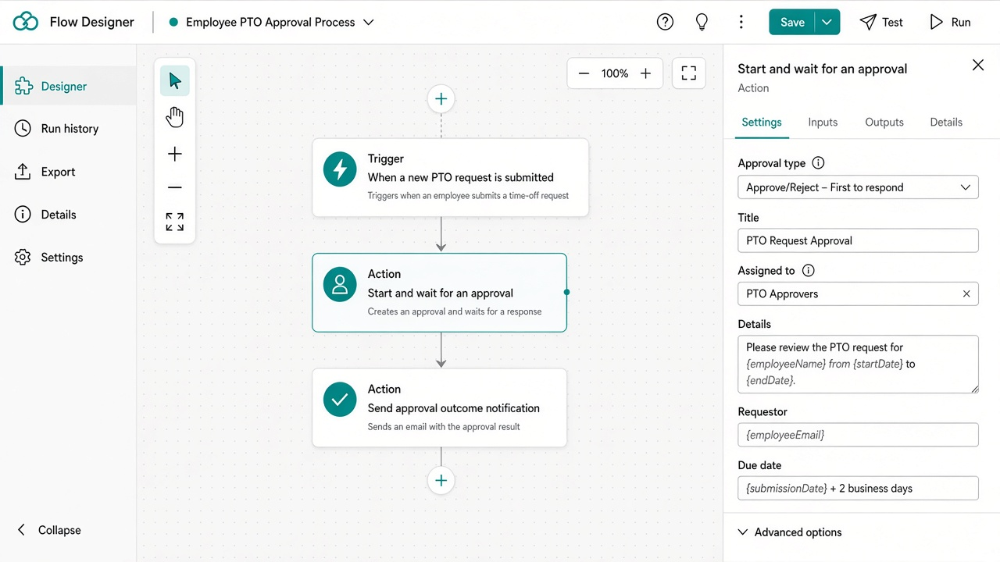
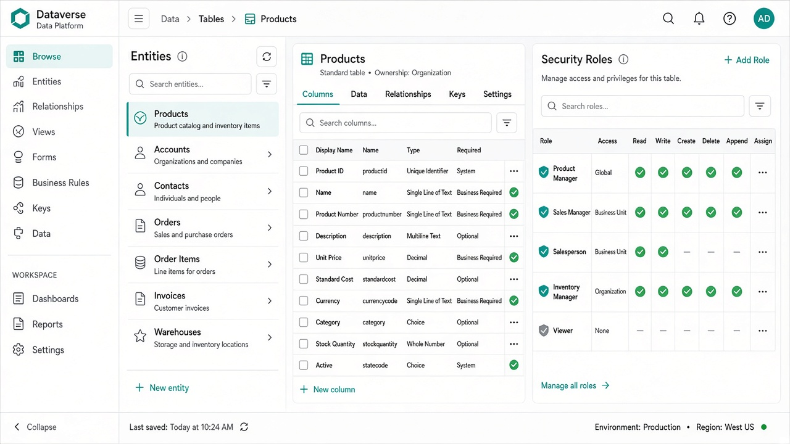
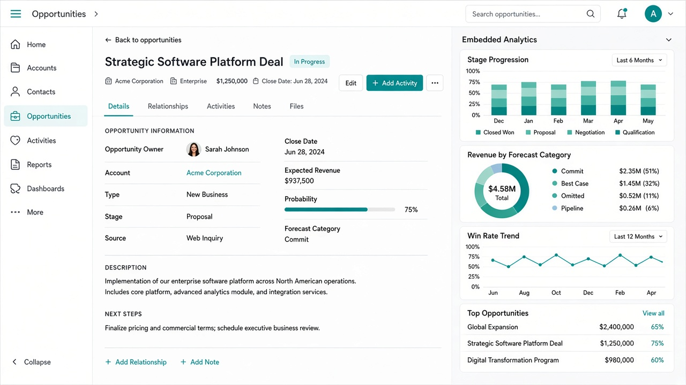
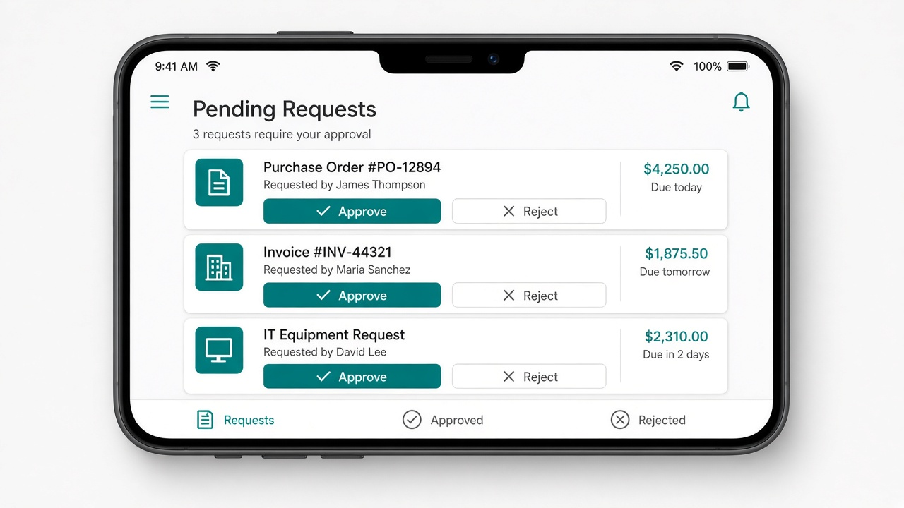
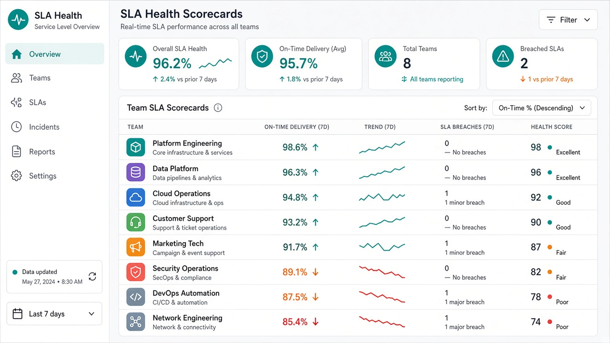

Business Systems · Experience
Power BI & Power Apps
Dashboards and low-code apps wired to CRM, ERP, and Dataverse—so operators see and act in the same loop.
Power BI
Power Apps
Power Automate
Dataverse
Teams

Executive BI
semantic models, DAX-ready visuals, executive KPIs.
Skill focus: semantic models, DAX-ready visuals, executive KPIs.

Canvas app
Power Apps forms, Dataverse writeback, mobile ops.
Skill focus: Power Apps forms, Dataverse writeback, mobile ops.

Flow designer
Power Automate approvals, connectors, branching.
Skill focus: Power Automate approvals, connectors, branching.

Dataverse browser
table design, relationships, security roles.
Skill focus: table design, relationships, security roles.

Embedded analytics
BI embedded in CRM workspaces.
Skill focus: BI embedded in CRM workspaces.

Mobile approvals
phone-first approval UX for operators.
Skill focus: phone-first approval UX for operators.

SLA scorecards
service health, trend sparklines, team targets.
Skill focus: service health, trend sparklines, team targets.